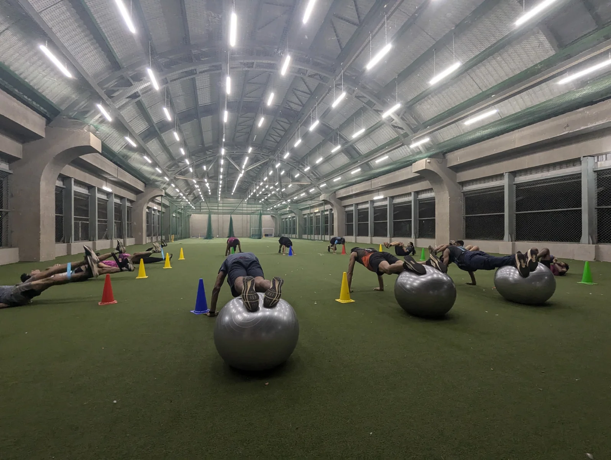
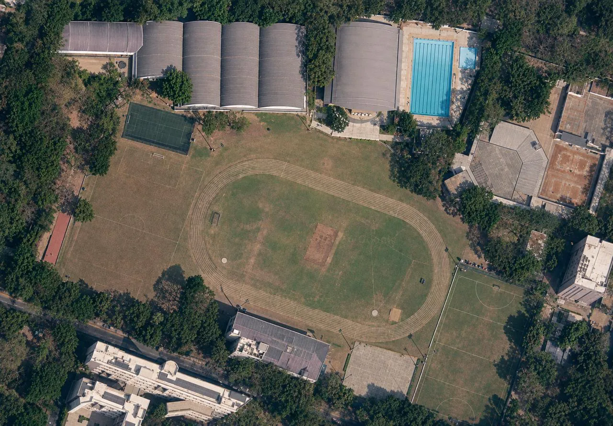
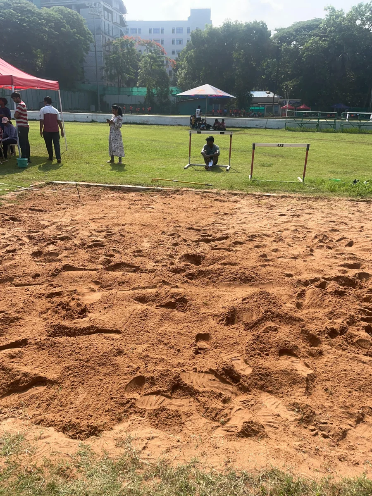
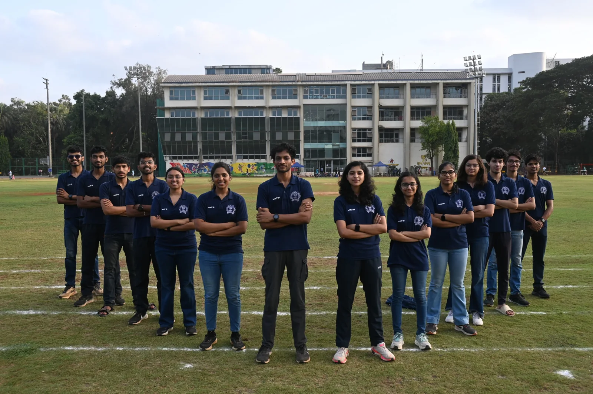

400m Grass Track
- Main training ground for all track events — sprints, hurdles, middle- and long-distance running.
- Well-maintained grass surface suitable for year-round endurance and technique work.
Sprints, distance, jumps and throws offer different ways into athletics. Explore the training spaces and activities, then speak to the team about finding your starting point.
Find your starting pointSpaces, equipment and practice.
Get to know what the sport offers.

Facility descriptions are from the institute’s October 2026 archive. Confirm current access, hours, equipment and coaching arrangements with the sports office.
Camps, institute competitions and ways to take part. Explore the activities described by the sports community.
These are archived activity descriptions, not upcoming fixtures. Ask the team about current dates, entry and eligibility.
Summer athletics training camp for beginners and advanced athletes. Held annually under the coaching of Irfan Sir and Renu Ma'am, the camp covers all track and field disciplines over an intensive training block, culminating in a demonstration event for the campus community.
The National Sports Organization scheme, available to all first-year students, allows incoming students to train formally in athletics throughout the year. NSO training sessions run multiple evenings a week and are a gateway for students to develop a lifelong connection to the sport.
A campus-wide marathon and endurance running event open to all members of the IIT Bombay community. Campathon draws students, faculty, and staff alike and has grown into one of the most popular participatory sporting events on the calendar.
The Cross Country Running General Championship — an inter-hostel competition held annually on campus. Hostels field runners across multiple distance categories in a head-to-head format, with points contributing to the overall GC standings.
A multi-sport endurance general championship combining swimming, cycling, and running. Held in two categories: Team Triathlon (team of 3, at least one female member) and Individual Triathlon, the event is one of the most demanding fixtures on the sports calendar.
Team relay events featuring mixed-gender participation. The mixed relay is a celebration of teamwork and speed, with every hostel fielding squads that train together in the lead-up to the event.
Historical results from the institute’s published source, preserved with their original years.
Silver Medal T.S.S. Maneesha
Silver Medal T.S.S. Maneesha
100m (W) Gold
200m (W) Gold
400m (W) Bronze
800m (M) Silver
1500m (M) Silver
Shotput Throw (M) Gold
Shotput Throw (W) Gold
Discus Throw (W) Silver
Roll of Honour: Samiksha Yadav Sports person of the year: T.S.S. Maneesha
The confirmed 100-metre synthetic straight is beside the football ground. The archive also describes the grass oval and field-event areas.
Explore the sporting campus
Synthetic straightAsk about getting started, current training, access or the right route into a team.
Contacts below are from the institutional snapshot of 18 October 2026. Confirm the current office-holder before reaching out.
Contact the sports office
Athletics, on campus.
Photographs from the archive.

Another way to play
Badminton ↗